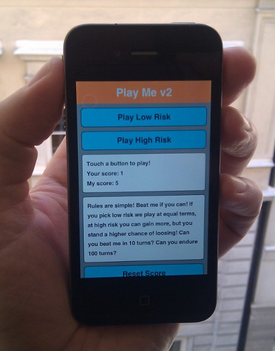
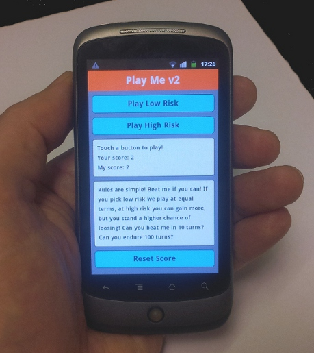

This tutorial demonstrates how to use the Database C API in a hybrid HTML/JavaScript/C++ application. In our tutorial on Web SQL, we made a simple game in plain HTML5/JavaScript; here we use C++ to implement the database functionality by invoking C++ code from JavaScript.
HTML5 has many useful features, but there can be times when you miss something. By making a hybrid app, which combines JavaScript with native code, the missing functionality can be made available. In the case of the MoSync SDK, functionality not available in JavaScript can be implemented in C/C++.
MoSync has a C/C++ Database API (based on SQLite). Similar to Web SQL, this API provides functions for creating and querying SQL databases. To access the C/C++ Database API from JavaScript, we will use a binding mechanism available in the MoSync Wormhole API, which makes it straightforward to invoke C++ functions from JavaScript. You can use this invocation mechanism to add any custom C++ code to your hybrid app, not just database-related functionality.
Compared to the Web SQL API, the MoSync Database API gives you greater flexibility and a wider range of functionality. The Web SQL standard is currently not actively maintained by the W3C Working Group, which makes the MoSync Database API an attractive option, an independent database API you can use in your hybrid apps. Furthermore, WebSQL has limitations when it comes to the size of the database. On iOS, the limitation is 50MB per app, and that goes for all databases you have in total (if you use multiple databases). On Android, there may be various limitations depending on the version/brand of Android OS used on the device.
The source code for the demo application is available on GitHub.
The app HybridSQLDemo is a simple turn-based game of luck (much like playing by tossing a dice). The "dice" in the app is a "wheel" with numbers 1 to 50. Whoever gets the highest number wins the current round, and the total score gets updated. This is the same app as we used in the Web SQL tutorial, but with a different database implementation.
You challenge the app and can affect the outcome by taking a low risk or a high risk. With high risk, you can double your score, but the app gets to roll the wheel twice.
Here are screenshots from the app running on iOS and Android:
 
The source code is available on GitHub. The JavaScript layer of the app is in file index.html. The C++ layer is in file main.cpp.
The database is used to store the total score of the two players (the user and the app). This makes the score persistent. While not a big database with lots of objects, it shows how to perform basic database operations, like querying and updating rows.
When using a layered architecture, like the Wormhole JavaScript/C++ framework, there is always the question of what to put in the different layers. In the case of the database functionality needed for our simple game app, we have at least two, quite different, options:
These design alternatives exist, not only for the database API, but for almost any functionality in your app that you implement using a layered/hybrid approach. It is a question of how to divide the code between the JavaScript layer and the C++ layer.
The first approach, to implement an API, would be similar to implementing the Web SQL API on top of MoSync, replacing the browser's implementation with our own MoSync version. This approach is of course the given choice if we would wish to make a generally reusable API that can be used in a wide spectrum of applications. But there are also drawbacks with going for the general solution.
The time it takes to implement a generic library can be considerable. Either you have to implement an existing specification, which can be tricky to get right. And if you design your own API, the design itself can take time to get right. Then there is the need for testing, documenting and maintaining the API, all of which can steal time from actual application development. The risk is that your project will end up implementing an API, not an app! ;)
The second approach, to implement the specific services needed by the application, is less general, but can be quicker to design, code, test, document and maintain. In our example, by services are functionality provided by the C++ layer.
For example, if we wish to get the current score of the player, here is the code we could write when using a JavaScript database API (like Web SQL):
function getScore(name, fun)
{
db.execSQL("SELECT score FROM player WHERE name=?", [name],
function(result)
{
var row = result.rows.item(0);
fun(row.score);
});
}
By comparison, here is the JavaScript code we could write when invoking a C++ service-oriented API:
function getScore(name, callbackFun)
{
mosync.bridge.send(["Custom", "GetScore", name], callbackFun);
}
In this approach, we don't care about the details of how database queries are performed. All we ask for, is for our callback function to get called with the score of the player with the name we provide. The details are taken care of by the C++ layer.
While the service-oriented approach usually is very application specific, it is a solution that is straightforward to implement and maintain. Furthermore, there can be performance issues to consider. By reducing the number of calls made between JavaScript and C++, performance can be improved. And code implemented in C++ could be faster than the corresponding JavaScript implementation would be.
For the simplicity and usefulness of the service-oriented design, we will use this approach in the example app of this tutorial.
MoSync SDK supports the SQL API on iOS and Android. The APi is based on SQLite. Database files are stored in the local files system of the device. An overview of the API is given in the Database C API guide. Additional details are provides in the Database API documentation.
Here is a quick tour of the API.
Use the global function maDBOpen to create/open a database:
MAHandle db = maDBOpen(databasePath);
Use the maDBExecSQL function to execute queries:
maDBExecSQL(db, "CREATE TABLE pet (name TEXT(50), age INTEGER)");
maDBExecSQL(db, "INSERT INTO pet VALUES ('Charmy', 7)");
maDBExecSQL(db, "INSERT INTO pet VALUES ('Vilma', 12)");
For queries that return a result set, a cursor is used to iterate over the query result:
char name[64];
MAHandle cursor = maDBExecSQL(db, "SELECT * FROM pet");
printf("All my pets:\n");
while (MA_DB_OK == maDBCursorNext(cursor))
{
// Read data into the name buffer.
int size = maDBCursorGetColumnText(cursor, 0, name, 64);
// Zero-terminate the name string.
name[size] = 0;
// Print the name.
printf("%s\n", name);
}
Release the cursor when we are done with it:
maDBCursorDestroy(cursor);
Finally close the database:
maDBClose(db);
Note that the above code contains no error checking, see the Database C API guide for further examples and details on how to handle errors.
The recent nightly builds of the MoSync SDK has a new binding mechanism that makes it easy to invoke C++ functions from JavaScript. This mechanism will also be available in the upcoming release of MoSync SDK 3.2. If you want to use the mechanism available in MoSync SDK 3.1, check out the tutorial Extending HTML5 Apps with C++.
From JavaScript we use mosync.bridge.send to invoke C++ code. This function takes two parameters, an array of strings, and an optional callback function. When using the new binding mechanism, the first string in the array always must be "Custom" (indicating a custom call is being made). Here is an example:
mosync.bridge.send(["Custom", "Vibrate"]);
In the C++ code, the "Vibrate" message is bound to a C++ function using the following code:
addMessageFun(
"Vibrate",
(FunTable::MessageHandlerFun)&MyMoblet::vibrate);
This will call the function vibrate in class MyMoblet when the message "Vibrate" is sent from JavaScript. The function pointer type FunTable::MessageHandlerFun is used for all functions invoked using this mechanism.
And here is how the vibrate function can be implemented:
void MyMoblet::vibrate()
{
maVibrate(500);
}
The example program HybridSQLDemo uses this mechanism. Read on in the next section for further details.
In the file main.cpp you will also find the implementation of the database services used by the application.
This file contains a class called DBUtil, which contains some static methods for simplifying the database code, and the main application class, called AppMoblet.
In the constructor of AppMoblet, the bindings from JavaScript are created as follows:
addMessageFun(
"GetScore",
(FunTable::MessageHandlerFun)&AppMoblet::serviceGetScore);
addMessageFun(
"SetScore",
(FunTable::MessageHandlerFun)&AppMoblet::serviceSetScore);
Two services are exposed to JavaScript, "GetScore" and "SetScore".
As an example, here is how the "SetScore" service is implemented in C++, in main.cpp:
void serviceSetScore(Wormhole::MessageStream& message)
{
// Get the name of the player.
const char* name = message.getNext();
// Get the new score value.
const char* score = message.getNext();
// Update the score for the given name.
char query[128];
sprintf(query, "UPDATE player SET score=%s WHERE name='%s'", score, name);
MAHandle result = maDBExecSQL(mDB, query);
if (MA_DB_OK == result)
{
callCallbackWithResult(message, "Updated score", true);
}
else
{
callCallbackWithResult(message, "Failed to update score", false);
}
}
Note how message.getNext() is used to retrieve a pointer to the next string in the message. The method callCallbackWithResult is used to send the result back to JavaScript. It is also implemented in main.cpp. Here is the code for this method:
void callCallbackWithResult(
Wormhole::MessageStream& message,
const String& result,
bool success)
{
// Get the callbackID parameter.
const char* callbackId = message.getNext();
// Call JavaScript reply handler.
String successValue = success ? "true" : "false";
String script = "mosync.bridge.reply(";
script += callbackId;
script += ",'" + result + "'";
script += "," + successValue + ")";
message.getWebView()->callJS(script);
}
Here you can see an additional parameter that is passed from JavaScript, a callback id. This id is created when the mosync.bridge.send function is called with a callback function. The id is then used with the function mosync.bridge.reply, which takes the callback id as its first parameter. The callJS method of the web view then evaluates the JavaScript string, which calls this function and looks up the function that corresponds to the callback id, and invokes that function with the parameters we have supplied.
Now, let's go back to JavaScript, and look at the function that invokes the C++ code for SetScore. It is found in file index.html:
function setScore(name, score, callbackFun)
{
mosync.bridge.send(
["Custom", "SetScore", name, score],
callbackFun);
}
Here you can see how the callback function is provided as the last parameter to mosync.bridge.send.
The discussion of the HybridSQLDemo app illustrates the following things:
If you compare the JavaScript code in the above example (HybridSQLDemo) with the previous example (WebSQLDemo), you can see that most of the application logic and user interface code is left untouched. The major change is that the functionality for database access now is provided by two functions, getScore and setScore, which provide calls into the C++ layer.